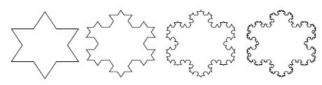

— THREE —
ー三ー
Why Systems Work So Well
为什么系统运行得这么好
_____________
是的，是的，是的
If the land mechanism as a whole is good, then every part is good, whether we understand it or not. If the biota, in the course of aeons, has built something we like but do not understand, then who but a fool would discard seemingly useless parts? To keep every cog and wheel is the first precaution of intelligent tinkering.
—Aldo Leopold,1 forester
ー奥尔多 · 利奥波德，1名林务员
Chapter Two introduced simple systems that create their own behavior based on their structures. Some are quite elegant—surviving the buffeting of the world—and, within limits, regaining their composure and proceeding on about their business of maintaining a room’s temperature, depleting an oil field, or bringing into balance the size of a fishing fleet with the productivity of a fishery resource.
第二章介绍了基于其结构创建自己行为的简单系统。有些人相当优雅——在世界的冲击下生存下来——在一定限度内，恢复镇定，继续他们的工作: 维持室内温度，消耗油田，或使渔船队的规模与渔业资源的生产力达到平衡。
If pushed too far, systems may well fall apart or exhibit heretofore unobserved behavior. But, by and large, they manage quite well. And that is the beauty of systems: They can work so well. When systems work well, we see a kind of harmony in their functioning. Think of a community kicking in to high gear to respond to a storm. People work long hours to help victims, talents and skills emerge; once the emergency is over, life goes back to “normal.”
如果推得太远，系统很可能会分崩离析，或者表现出迄今为止未被观察到的行为。但是，总的来说，他们管理得很好。这就是系统的美妙之处: 它们可以工作得如此出色。当系统运转良好的时候，我们可以在它们的运作中看到一种和谐。想象一下一个社区为了应对风暴而全力以赴。人们长时间工作来帮助受害者，才能和技能出现; 一旦紧急情况结束，生活回到“正常”
Why do systems work so well? Consider the properties of highly functional systems—machines or human communities or ecosystems—which are familiar to you. Chances are good that you may have observed one of three characteristics: resilience, self-organization, or hierarchy.
为什么系统运行得这么好？考虑一下你熟悉的高功能系统——机器、人类社区或生态系统——的特性。很有可能你已经观察到了三个特征中的一个: 弹性，自我组织，或等级制度。
Resilience
弹性
Placing a system in a straitjacket of constancy can cause fragility to evolve.
—C. S. Holling,2
2 ecologist
Resilience has many definitions, depending on the branch of engineering, ecology, or system science doing the defining. For our purposes, the normal dictionary meaning will do: “the ability to bounce or spring back into shape, position, etc., after being pressed or stretched. Elasticity. The ability to recover strength, spirits, good humor, or any other aspect quickly.” Resilience is a measure of a system’s ability to survive and persist within a variable environment. The opposite of resilience is brittleness or rigidity.
韧性有许多定义，这取决于工程学、生态学或系统科学的分支进行定义。对于我们的目的，正常的字典意义将做: “能够弹回或弹回到形状，位置，等后，被压力或拉伸。弹性。快速恢复力量、精神、幽默感或其他方面的能力。”韧性是衡量一个系统在多变的环境中生存和坚持的能力。韧性的对立面是脆性或刚性。
Resilience arises from a rich structure of many feedback loops that can work in different ways to restore a system even after a large perturbation. A single balancing loop brings a system stock back to its desired state. Resilience is provided by several such loops, operating through different mechanisms, at different time scales, and with redundancy—one kicking in if another one fails.
弹性源于许多反馈回路的丰富结构，这些回路可以以不同的方式恢复系统，即使在经历了一次大的扰动之后。一个单一的平衡回路把一个系统股票带回到它想要的状态。韧性是由几个这样的循环提供的，它们通过不同的机制，在不同的时间尺度上运行，并且具有冗余性——一个循环在另一个循环失败时启动。
A set of feedback loops that can restore or rebuild feedback loops is resilience at a still higher level—meta-resilience, if you will. Even higher meta-meta- resilience comes from feedback loops that can learn, create, design, and evolve ever more complex restorative structures. Systems that can do this are self-organizing, which will be the next surprising system characteristic I come to.
一组可以恢复或重建反馈回路的反馈回路是一种更高层次的弹性——元弹性，如果你愿意的话。甚至更高的元元复原力来自于反馈回路，它可以学习、创造、设计和进化出更复杂的恢复结构。能够做到这一点的系统是自组织的，这将是我下一个令人惊讶的系统特性。
The human body is an astonishing example of a resilient system. It can fend off thousands of different kinds of invaders, it can tolerate wide ranges of temperature and wide variations in food supply, it can reallocate blood supply, repair rips, gear up or slow down metabolism, and compensate to some extent for missing or defective parts. Add to it a self-organizing intelligence that can learn, socialize, design technologies, and even transplant body parts, and you have a formidably resilient system—although not infinitely so, because, so far at least, no human body-plus-intelligence has been resilient enough to keep itself or any other body from eventually dying.
人体是弹性系统的一个惊人例子。它可以抵御成千上万种不同的入侵者，它可以承受广泛的温度范围和食物供应的广泛变化，它可以重新分配血液供应，修复撕裂，齿轮加速或减缓新陈代谢，并在一定程度上补偿缺失或有缺陷的部分。再加上能够学习、社交、设计技术甚至移植身体部位的自组织智能，你就拥有了一个强大的弹性系统——尽管不是无限的弹性，因为至少到目前为止，没有任何一个人体加上智能具有足够的弹性来保护自己或任何其他身体免于最终死亡。
There are always limits to resilience.
Ecosystems are also remarkably resilient, with multiple species holding each other in check, moving around in space, multiplying or declining over time in response to weather and the availability of nutrients and the impacts of human activities. Populations and ecosystems also have the ability to “learn” and evolve through their incredibly rich genetic variability. They can, given enough time, come up with whole new systems to take advantage of changing opportunities for life support.
生态系统也具有显著的弹性，多种物种相互制约，在空间中移动，随着时间的推移，随着天气、营养物质的可获得性和人类活动的影响而成倍增加或减少。种群和生态系统也有能力通过其难以置信的丰富遗传多样性来“学习”和进化。只要给它们足够的时间，它们就能创造出全新的系统，利用不断变化的生命维持机会。
Resilience is not the same thing as being static or constant over time. Resilient systems can be very dynamic. Short-term oscillations, or periodic outbreaks, or long cycles of succession, climax, and collapse may in fact be the normal condition, which resilience acts to restore!
随着时间的推移，弹性并不等同于静止或不变。弹性系统是非常动态的。短期的震荡，或周期性的爆发，或长期的连续、高潮和崩溃周期，实际上可能是正常的状态，韧性起作用来恢复！
And, conversely, systems that are constant over time can be unresilient. This distinction between static stability and resilience is important. Static stability is something you can see; it’s measured by variation in the condition of a system week by week or year by year. Resilience is something that may be very hard to see, unless you exceed its limits, overwhelm and damage the balancing loops, and the system structure breaks down. Because resilience may not be obvious without a whole-system view, people often sacrifice resilience for stability, or for productivity, or for some other more immediately recognizable system property.
反过来说，随着时间的推移不变的系统可能是不具有弹性的。静态稳定性和弹性之间的区别很重要。静态稳定性是你可以看到的东西; 它是通过一个系统每周或每年的状态变化来衡量的。弹性是一种很难看到的东西，除非你超越了它的极限，压倒并破坏了平衡回路，系统结构就会崩溃。因为如果没有整个系统的观点，弹性可能并不明显，人们常常为了稳定性、生产力或其他一些更直接可识别的系统属性而牺牲弹性。
• Injections of genetically engineered bovine growth hormone increase the milk production of a cow without proportionately increasing the cow’s food intake. The hormone diverts some of the cow’s metabolic energy from other bodily functions to milk production. (Cattle breeding over centuries has done much the same thing but not to the same degree.) The cost of increased production is lowered resilience. The cow is less healthy, less long-lived, more dependent on human management.
• Just-in-time deliveries of products to retailers or parts to manufacturers have reduced inventory instabilities and brought down costs in many industries. The just-in-time model also has made the production system more vulnerable, however, to perturbations in fuel supply, traffic flow, computer breakdown, labor availability, and other possible glitches.
• Hundreds of years of intensive management of the forests of Europe gradually have replaced native ecosystems with single age, single-species plantations, often of nonnative trees. These are designed to yield wood and pulp at a high rate indefinitely. However, without multiple species interacting with each other and drawing and returning varying combinations of nutrients from the soil, these forests have lost their resilience. They seem to be especially vulnerable to a new form of insult: industrial air pollution.
Many chronic diseases, such as cancer and heart disease, come from breakdown of resilience mechanisms that repair DNA, keep blood vessels flexible, or control cell division. Ecological disasters in many places come from loss of resilience, as species are removed from ecosystems, soil chemistry and biology are disturbed, or toxins build up. Large organizations of all kinds, from corporations to governments, lose their resilience simply because the feedback mechanisms by which they sense and respond to their environment have to travel through too many layers of delay and distortion. (More on that in a minute, when we come to hierarchies.)
许多慢性疾病，如癌症和心脏病，来自修复 DNA、保持血管灵活性或控制细胞分裂的弹性机制的崩溃。许多地方的生态灾难都是由于生态系统中的物种消失，土壤化学和生物受到干扰，或者毒素累积造成的。各种各样的大型组织，从公司到政府，仅仅因为它们感知和响应环境的反馈机制必须经过太多层次的延迟和扭曲，就失去了弹性。(关于这一点，我们稍后再谈等级制度
I think of resilience as a plateau upon which the system can play, performing its normal functions in safety. A resilient system has a big plateau, a lot of space over which it can wander, with gentle, elastic walls that will bounce it back, if it comes near a dangerous edge. As a system loses its resilience, its plateau shrinks, and its protective walls become lower and more rigid, until the system is operating on a knife edge, likely to fall off in one direction or another whenever it makes a move. Loss of resilience can come as a surprise, because the system usually is paying much more attention to its play than to its playing space. One day it does something it has done a hundred times before and crashes.
我认为弹性是一个平台，系统可以在上面发挥作用，在安全的情况下执行正常的功能。一个有弹性的系统有一个很大的平台，有很大的空间可以漫游，如果它接近危险的边缘，有柔和的弹性墙可以弹回来。当一个系统失去弹性时，它的平台会缩小，它的保护壁会变得越来越低，越来越坚硬，直到系统在刀刃上运行，每当它移动时，就可能向一个方向或另一个方向掉落。弹性的丧失可能会让人感到意外，因为系统通常更关注它的游戏，而不是它的游戏空间。有一天，它做了一件以前做过一百次的事，然后崩溃了。
Systems need to be managed not only for productivity or stability, they also need to be managed for resilience—the ability to recover from perturbation, the ability to restore or repair themselves.
Awareness of resilience enables one to see many ways to preserve or enhance a system’s own restorative powers. That awareness is behind the encouragement of natural ecosystems on farms, so that predators can take on more of the job of controlling pests. It is behind “holistic” health care that tries not only to cure disease but also to build up a body’s internal resistance. It is behind aid programs that do more than give food or money—that try to change the circumstances that obstruct peoples’ ability to provide their own food or money.
对弹性的认识使人们能够看到许多保持或增强系统自身恢复能力的方法。这种意识是在鼓励农场自然生态系统的背后，因此捕食者可以承担更多的控制害虫的工作。它是“整体”卫生保健的背后，它不仅试图治愈疾病，而且建立一个机构的内部抵抗力。它是援助项目的幕后推手，这些项目不仅仅是提供食物或金钱，还试图改变阻碍人们提供食物或金钱能力的环境。
Self-Organization
自我组织
[Evolution] appears to be not a series of accidents the course of which is determined only by the change of environments during earth history and the resulting struggle for existence, . . . but is governed by definite laws. . . . The discovery of these laws constitutes one of the most important tasks of the future.
—Ludwig von Bertalanffy,3
3 biologist
The most marvelous characteristic of some complex systems is their ability to learn, diversify, complexify, evolve. It is the ability of a single fertilized ovum to generate, out of itself, the incredible complexity of a mature frog, or chicken, or person. It is the ability of nature to have diversified millions of fantastic species out of a puddle of organic chemicals. It is the ability of a society to take the ideas of burning coal, making steam, pumping water, and specializing labor, and develop them eventually into an automobile assembly plant, a city of skyscrapers, a worldwide network of communications.
一些复杂系统最神奇的特征是它们学习、多样化、复杂化和进化的能力。它是一个单个受精卵的能力，自身产生一个成熟的青蛙、鸡或人的难以置信的复杂性。这是大自然从一滩有机化学物质中创造出数以百万计的奇妙物种的能力。它是一个社会将燃煤、制造蒸汽、抽水和专业化劳动的理念，并最终发展成为汽车装配厂、摩天大楼林立的城市、全球通讯网络的能力。
This capacity of a system to make its own structure more complex is called self-organization. You see self-organization in a small, mechanistic way whenever you see a snowflake, or ice feathers on a poorly insulated window, or a supersaturated solution suddenly forming a garden of crystals. You see self-organization in a more profound way whenever a seed sprouts, or a baby learns to speak, or a neighborhood decides to come together to oppose a toxic waste dump.
系统使其自身结构更加复杂的这种能力称为自我组织。每当你看到雪花，或者隔热性能差的窗户上的冰羽毛，或者一个过饱和的溶液突然形成了一个水晶花园，你就会以一种小而机械的方式看到自我组织。每当一粒种子发芽，或者一个婴儿学会说话，或者一个邻居决定联合起来反对一个有毒废物倾倒的时候，你就会以一种更深刻的方式看待自我组织。
Self-organization is such a common property, particularly of living systems, that we take it for granted. If we didn’t, we would be dazzled by the unfolding systems of our world. And if we weren’t nearly blind to the property of self-organization, we would do better at encouraging, rather than destroying, the self-organizing capacities of the systems of which we are a part.
自我组织是如此普遍的属性，尤其是在生命系统中，以至于我们认为这是理所当然的。如果我们不这样做，我们就会被我们世界上正在展开的系统所迷惑。如果我们不是对自我组织的特性几乎视而不见，我们就会更好地鼓励，而不是摧毁我们所属系统的自我组织能力。
Like resilience, self-organization is often sacrificed for purposes of short-term productivity and stability. Productivity and stability are the usual excuses for turning creative human beings into mechanical adjuncts to production processes. Or for narrowing the genetic variability of crop plants. Or for establishing bureaucracies and theories of knowledge that treat people as if they were only numbers.
与弹性一样，为了短期的生产力和稳定性，自我组织常常被牺牲掉。生产力和稳定性是将有创造力的人类变成生产过程的机械附属物的通常借口。或者是为了缩小作物的遗传多样性。或者建立官僚机构和知识理论，把人们当作数字来对待。
Self-organization produces heterogeneity and unpredictability. It is likely come up with whole new structures, whole new ways of doing things. It requires freedom and experimentation, and a certain amount of disorder. These conditions that encourage self-organization often can be scary for individuals and threatening to power structures. As a consequence, education systems may restrict the creative powers of children instead of stimulating those powers. Economic policies may lean toward supporting established, powerful enterprises rather than upstart, new ones. And many governments prefer their people not to be too self-organizing.
自我组织产生异质性和不可预测性。它很可能带来全新的结构，全新的做事方式。它需要自由和实验，以及一定程度的无序。这些鼓励自我组织的条件往往会让个人感到害怕，并威胁到权力结构。因此，教育系统可能会限制孩子的创造力，而不是刺激这些力量。经济政策可能倾向于支持现有的、强大的企业，而不是新兴的企业。许多政府希望他们的人民不要过于自我组织。
Fortunately, self-organization is such a basic property of living systems that even the most overbearing power structure can never fully kill it, although in the name of law and order, self-organization can be suppressed for long, barren, cruel, boring periods.
幸运的是，自我组织是生命系统的一个基本属性，即使是最霸道的权力结构也无法完全消灭它，尽管在法律和秩序的名义下，自我组织可以被长期压制，贫瘠，残酷，无聊的时期。
Systems theorists used to think that self-organization was such a complex property of systems that it could never be understood. Computers were used to model mechanistic, “deterministic” systems, not evolutionary ones, because it was suspected, without much thought, that evolutionary systems were simply not understandable.
系统理论家过去认为自我组织是系统的一个复杂属性，它永远不可能被理解。计算机被用来建模机械的，“确定性”的系统，而不是进化的系统，因为它被怀疑，没有太多思考，进化的系统根本不可理解。
New discoveries, however, suggest that just a few simple organizing principles can lead to wildly diverse self-organizing structures. Imagine a triangle with three equal sides. Add to the middle of each side another equilateral triangle, one-third the size of the first one. Add to each of the new sides another triangle, one-third smaller. And so on. The result is called a Koch snowflake. (See Figure 46.) Its edge has tremendous length—but it can be contained within a circle. This structure is one simple example of fractal geometry—a realm of mathematics and art populated by elaborate shapes formed by relatively simple rules.
然而，新的发现表明，仅仅几个简单的组织原则就可以导致各种各样的自组织结构。想象一个三边相等的三角形。在每个边的中间加上另一个正三角形，大小是第一个的三分之一。在每个新边上加上另一个三角形，小三分之一。以此类推。结果就是科赫公司的雪花。(见图46)它的边缘有着惊人的长度——但是它可以包含在一个圆圈里。这种结构是分形几何的一个简单例子——一个由相对简单的规则形成的复杂形状构成的数学和艺术领域。
Similarly, the delicate, beautiful, intricate structure of a stylized fern can be generated by a computer with just a few simple fractal rules. The differentiation of a single cell into a human being probably proceeds by some similar set of geometric rules, basically simple, but generating utter complexity. (It is because of fractal geometry that the average human lung has enough surface area to cover a tennis court.)
类似地，一种风格化的蕨类植物的精致、美丽、复杂的结构可以由计算机通过几个简单的分形规则生成。将一个单细胞分化成人类的过程可能是通过一系列类似的几何规则进行的，基本上很简单，但却产生了极其复杂的结果。(正是由于分形几何的存在，人类肺部的平均表面积才足以覆盖一个网球场

Figure 46. Even a delicate and intricate pattern, such as the Koch snowflake shown here, can evolve from a simple set of organizing principles or decision rules.
图46。即使是一个精致而复杂的图案，如图中所示的 Koch 雪花，也可以从一套简单的组织原则或决策规则发展而来。
Here are some other examples of simple organizing rules that have led to self-organizing systems of great complexity:
以下是其他一些简单组织规则的例子，这些规则导致了极其复杂的自组织系统:
• All of life, from viruses to redwood trees, from amoebas to elephants, is based on the basic organizing rules encapsulated in the chemistry of DNA, RNA, and protein molecules.
• The agricultural revolution and all that followed started with the simple, shocking ideas that people could stay settled in one place, own land, select and cultivate crops.
• “God created the universe with the earth at its center, the land with the castle at its center, and humanity with the Church at its center”—the organizing principle for the elaborate social and physical structures of Europe in the Middle Ages.
• “God and morality are outmoded ideas; people should be objective and scientific, should own and multiply the means of production, and should treat people and nature as instrumental inputs to production”—the organizing principles of the Industrial Revolution.
Out of simple rules of self-organization can grow enormous, diversifying crystals of technology, physical structures, organizations, and cultures.
通过简单的自我组织规则，可以发展出巨大的、多样化的技术晶体、物理结构、组织和文化。
Systems often have the property of self-organization—the ability to structure themselves, to create new structure, to learn, diversify, and complexify. Even complex forms of self-organization may arise from relatively simple organizing rules—or may not.
Science knows now that self-organizing systems can arise from simple rules. Science, itself a self-organizing system, likes to think that all the complexity of the world must arise, ultimately, from simple rules. Whether that actually happens is something that science does not yet know.
科学现在知道，自组织系统可以从简单的规则中产生。科学本身就是一个自组织系统，它喜欢认为世界上所有的复杂性最终都必须来自于简单的规则。至于这种情况是否真的发生，科学还不知道。
Hierarchy
等级制度
So, naturalists observe, a flea
Has smaller Fleas that on him prey;
And these have smaller still to bite ‘em,
And so proceed ad infinitum.
—Jonathan Swift,4
4 Jonathan Swift, 18th century poet
In the process of creating new structures and increasing complexity, one thing that a self-organizing system often generates is hierarchy.
在创建新结构和增加复杂性的过程中，自组织系统通常会产生一个层次结构。
The world, or at least the parts of it humans think they understand, is organized in subsystems aggregated into larger subsystems, aggregated into still larger subsystems. A cell in your liver is a subsystem of an organ, which is a subsystem of you as an organism, and you are a subsystem of a family, an athletic team, a musical group, and so forth. These groups are subsystems of a town or city, and then a nation, and then the whole global socioeconomic system that dwells within the biosphere system. This arrangement of systems and subsystems is called a hierarchy.
世界，或者至少是人类认为他们理解的那部分世界，是在子系统中组织起来的，子系统聚合成更大的子系统，聚合成更大的子系统。肝脏中的细胞是器官的一个子系统，器官是你作为一个有机体的一个子系统，而你是一个家庭、一个运动队、一个音乐团体等等的子系统。这些群体是一个城镇或城市的子系统，然后是一个国家，然后是居住在生物圈系统中的整个全球社会经济系统。这种系统和子系统的排列叫做等级制度。
Corporate systems, military systems, ecological systems, economic systems, living organisms, are arranged in hierarchies. It is no accident that that is so. If subsystems can largely take care of themselves, regulate themselves, maintain themselves, and yet serve the needs of the larger system, while the larger system coordinates and enhances the functioning of the subsystems, a stable, resilient, and efficient structure results. It is hard to imagine how any other kind of arrangement could have come to be.
企业系统、军事系统、生态系统、经济系统、生命有机体等按等级排列。这并非偶然。如果子系统能够在很大程度上照顾自己，自我调节，自我维护，同时满足更大系统的需求，而更大的系统协调和增强子系统的功能，那么一个稳定、弹性和有效的结构就会产生。很难想象任何其他类型的安排是如何形成的。
INTERLUDE
• Why the Universe Is Organized into Hierarchies—a Fable
插曲
为什么宇宙被组织成等级制度——一个寓言
There once were two watchmakers, named Hora and Tempus. Both of them made fine watches, and they both had many customers. People dropped into their stores, and their phones rang constantly with new orders. Over the years, however, Hora prospered, while Tempus became poorer and poorer. That’s because Hora discovered the principle of hierarchy. . . .
从前有两个钟表匠，名叫霍拉和坦普斯。他们都生产精美的手表，而且都有很多顾客。人们来到他们的商店，他们的电话不断响起新订单。然而，这些年来，Hora 发达了，而 Tempus 变得越来越穷。这是因为霍拉发现了等级制度的原理。
The watches made by both Hora and Tempus consisted of about one thousand parts each. Tempus put his together in such a way that if he had one partly assembled and had to put it down—to answer the phone, say—it fell to pieces. When he came back to it, Tempus would have to start all over again. The more his customers phoned him, the harder it became for him to find enough uninterrupted time to finish a watch.
Hora 和 Tempus 制造的手表各由1000个部件组成。坦普斯把他的电脑组装成这样，如果他把一个部件组装起来，不得不把它放下来——比如说接电话——它就会变成碎片。当他回来的时候，Tempus 将不得不重新开始。他的顾客给他打的电话越多，他就越难找到足够的时间不间断地完成一块手表。
Hora’s watches were no less complex than those of Tempus, but he put together stable subassemblies of about ten elements each. Then he put ten of these subassemblies together into a larger assembly; and ten of those assemblies constituted the whole watch. Whenever Hora had to put down a partly completed watch to answer the phone, he lost only a small part of his work. So he made his watches much faster and more efficiently than did Tempus.
Hora 的手表并不比 Tempus 的手表复杂，但是他把每个大约10个元素的稳定组件放在一起。然后他把十个这样的组件组合成一个更大的组件，其中的十个组件组成了整个手表。每当霍拉不得不放下一块部分完成的手表去接电话时，他只丢失了一小部分工作。所以他制作的手表比 Tempus 更快更有效率。
Complex systems can evolve from simple systems only if there are stable intermediate forms. The resulting complex forms will naturally be hierarchic. That may explain why hierarchies are so common in the systems nature presents to us. Among all possible complex forms, hierarchies are the only ones that have had the time to evolve.5 Paraphrased from Herbert Simon,
只有存在稳定的中间形式，复杂系统才能从简单系统演化而来。由此产生的复杂形式自然是分层的。这也许可以解释为什么层次结构在自然界呈现给我们的系统中如此普遍。在所有可能的复杂形式中，等级制度是唯一有时间进化的,
Hierarchies are brilliant systems inventions, not only because they give a system stability and resilience, but also because they reduce the amount of information that any part of the system has to keep track of.
层次结构是杰出的系统发明，不仅因为它们给系统带来了稳定性和弹性，还因为它们减少了系统任何部分必须跟踪的信息量。
In hierarchical systems relationships within each subsystem are denser and stronger than relationships between subsystems. Everything is still connected to everything else, but not equally strongly. People in the same university department talk to each other more than they talk to people in other departments. The cells that constitute the liver are in closer communication with each other than they are with the cells of the heart. If these differential information links within and between each level of the hierarchy are designed right, feedback delays are minimized. No level is overwhelmed with information. The system works with efficiency and resilience.
在层次系统中，每个子系统之间的关系比子系统之间的关系更密集、更强大。每件事物仍然与其他事物相连，但不是同样强烈。在同一个大学系里，人们相互之间的交流要多于他们与其他系的人交流。构成肝脏的细胞之间的交流要比它们与心脏细胞之间的交流更为密切。如果这些不同的信息链接内部和之间的层次结构设计正确，反馈延迟最小化。没有一个级别被信息淹没。系统的工作效率和弹性。
Hierarchical systems are partially decomposable. They can be taken apart and the subsystems with their especially dense information links can function, at least partially, as systems in their own right. When hierarchies break down, they usually split along their subsystem boundaries. Much can be learned by taking apart systems at different hierarchical levels—cells or organs, for example—and studying them separately. Hence, systems thinkers would say, the reductionist dissection of regular science teaches us a lot. However, one should not lose sight of the important relationships that each subsystem to the others and to the higher levels of the hierarchy, or one will be in for surprises.
层次系统是部分可分解的。它们可以被分解，具有特别密集的信息链的子系统可以发挥作用，至少是部分地，作为它们自己的系统。当层次结构崩溃时，它们通常会沿着子系统的边界分裂。通过分解不同层次的系统——例如细胞或器官——并分别研究它们，我们可以学到很多东西。因此，系统思想家会说，对常规科学的简化剖析教会了我们很多东西。然而，人们不应该忽视每个子系统与其他子系统以及与更高层次的子系统之间的重要关系，否则人们将会感到惊讶。
If you have a liver disease, for example, a doctor usually can treat it without paying much attention to your heart or your tonsils (to stay on the same hierarchical level) or your personality (to move up a level or two) or the DNA in the nuclei of the liver cells (to move down several levels). There are just enough exceptions to that rule, however, to reinforce the necessity of stepping back to consider the whole hierarchy. Maybe your job exposes you to a chemical that is damaging your liver. Maybe the disease originates in a malfunction of the DNA.
例如，如果你患有肝脏疾病，医生通常不会过多关注你的心脏或扁桃体(保持相同的等级水平)、你的个性(提升一到两个等级)或者肝细胞核中的 DNA (提升几个等级)。然而，这个规则有足够的例外，足以强调退一步考虑整个层次的必要性。也许你的工作会让你接触到一种损害你肝脏的化学物质。也许这种疾病起源于 DNA 的故障。
What you need to think about may change over time, as self-organizing systems evolve new degrees of hierarchy and integration. The energy systems of nations were once almost completely decomposable one from another. That is no longer true. People whose thinking has not evolved as fast as the energy economy has may be shocked to discover how dependent they have become on resources and decisions halfway around the world.
你需要考虑的可能会随着时间的推移而改变，因为自组织系统进化出新的层次和整合程度。各个国家的能源系统曾经几乎完全可以相互分解。但现在情况不同了。那些思想没有能源经济发展得那么快的人可能会震惊地发现，他们已经变得多么依赖地球另一端的资源和决策。
You can watch self-organizing systems form hierarchies. A self-employed person gets too much work and hires some helpers. A small, informal nonprofit organization attracts many members and a bigger budget and one day the members decide, “Hey, we need someone to organize all this.” A cluster of dividing cells differentiates into special functions and generates a branching circulatory system to feed all cells, and a branching nervous system to coordinate them.
您可以观察自组织系统形成的层次结构。一个自由职业者得到了太多的工作并且雇佣了一些帮手。一个小型的非营利组织吸引了许多成员和更多的预算，有一天成员们决定，“嘿，我们需要有人来组织这一切。”一群分裂的细胞分化成特殊的功能，产生一个分支循环系统来喂养所有的细胞，以及一个分支神经系统来协调它们。
Hierarchies evolve from the lowest level up—from the pieces to the whole, from cell to organ to organism, from individual to team, from actual production to management of production. Early farmers decided to come together and form cities for self-protection and for making trade more efficient. Life started with single-cell bacteria, not with elephants. The original purpose of a hierarchy is always to help its originating subsystems do their jobs better. This is something, unfortunately, that both the higher and the lower levels of a greatly articulated hierarchy easily can forget. Therefore, many systems are not meeting our goals because of malfunctioning hierarchies.
等级制度从最底层演变到整体，从细胞到器官到有机体，从个人到团队，从实际生产到生产管理。早期的农民为了自我保护和提高贸易效率，决定聚集在一起组建城市。生命起源于单细胞细菌，而不是大象。等级制度的最初目的总是帮助它的原始子系统更好地完成它们的工作。不幸的是，无论是高层还是低层都很容易忘记这一点。因此，许多系统不能达到我们的目标是因为错误的层次结构。
If a team member is more interested in personal glory than in the team winning, he or she can cause the team to lose. If a body cell breaks free from its hierarchical function and starts multiplying wildly, we call it a cancer. If students think their purpose is to maximize personal grades instead of seeking knowledge, cheating and other counterproductive behaviors break out. If a single corporation bribes the government to favor that corporation, the advantages of the competitive market and the good of the whole society are eroded.
如果一个团队成员对个人荣誉比对团队胜利更感兴趣，他或她可能导致团队失败。如果一个身体细胞从它的等级功能中挣脱出来，开始疯狂地繁殖，我们称之为癌症。如果学生认为他们的目的是最大化个人成绩而不是寻求知识，作弊和其他适得其反的行为就会爆发。如果一个单一的公司贿赂政府来偏袒这个公司，竞争市场的优势和整个社会的利益就会被侵蚀。
When a subsystem’s goals dominate at the expense of the total system’s goals, the resulting behavior is called suboptimization.
当一个子系统的目标以牺牲整个系统的目标为代价而占主导地位时，由此产生的行为被称为次优化。
Just as damaging as suboptimization, of course, is the problem of too much central control. If the brain controlled each cell so tightly that the cell could not perform its self-maintenance functions, the whole organism could die. If central rules and regulations prevent students or faculty from exploring fields of knowledge freely, the purpose of the university is not served. The coach of a team might interfere with the on-the-spot perceptions of a good player, to the detriment of the team. Economic examples of overcontrol from the top, from companies to nations, are the causes of some of the great catastrophes of history, all of which are by no means behind us.
当然，与次优化同样具有破坏性的是过多的中央控制问题。如果大脑对每个细胞的控制过于紧密，以至于细胞无法执行其自我维持功能，那么整个有机体可能会死亡。如果中央的规章制度阻止学生或教职工自由探索知识领域，大学的目的就无法实现。一个球队的教练可能会干扰一个好球员的现场感知，从而损害球队的利益。从公司到国家，从上到下的过度控制的经济例子，是历史上一些重大灾难的原因，所有这些灾难绝不是在我们身后。
To be a highly functional system, hierarchy must balance the welfare, freedoms, and responsibilities of the subsystems and total system—there must be enough central control to achieve coordination toward the large system goal, and enough autonomy to keep all subsystems flourishing, functioning, and self-organizing.
为了成为一个高功能的系统，等级制度必须平衡各子系统和整个系统的福利、自由和责任ーー必须有足够的中央控制来实现大系统目标的协调，并有足够的自主性来保持所有子系统的繁荣、运行和自组织。
Resilience, self-organization, and hierarchy are three of the reasons dynamic systems can work so well. Promoting or managing for these properties of a system can improve its ability to function well over the long term—to be sustainable. But watching how systems behave also can be full of surprises.
弹性、自我组织和层次结构是动态系统运行良好的三个原因。促进或管理系统的这些特性可以提高系统长期良好运行的能力——可持续性。但是，观察系统的运行方式也可能充满惊喜。
Hierarchical systems evolve from the bottom up. The purpose of the upper layers of the hierarchy is to serve the purposes of the lower layers.